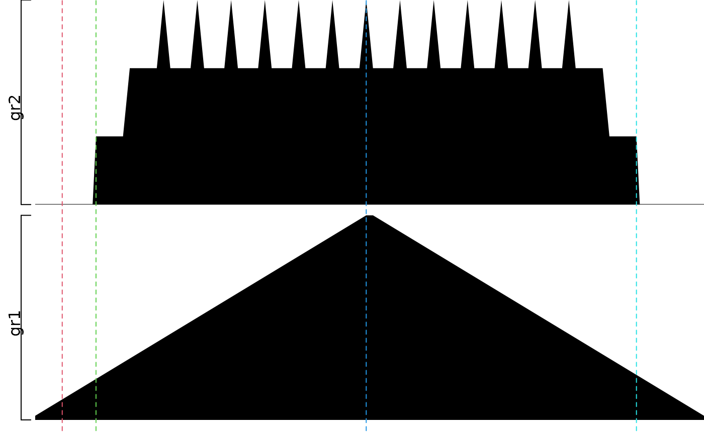

plotGRanges.RdA function to plot GRanges data for given range
plotGRanges( ..., range = GRanges(), viewerStyle = trackViewerStyle(), autoOptimizeStyle = FALSE, newpage = TRUE )
| ... | one or more objects of |
|---|---|
| range | an object of |
| viewerStyle | an object of |
| autoOptimizeStyle | should use |
| newpage | should be draw on a new page? |
An object of viewport for addGuideLine
See Also as addGuideLine, addArrowMark
gr1 <- GRanges("chr1", IRanges(1:50, 51:100)) gr2 <- GRanges("chr1", IRanges(seq(from=10, to=80, by=5), seq(from=20, to=90, by=5))) vp <- plotGRanges(gr1, gr2, range=GRanges("chr1", IRanges(1, 100)))